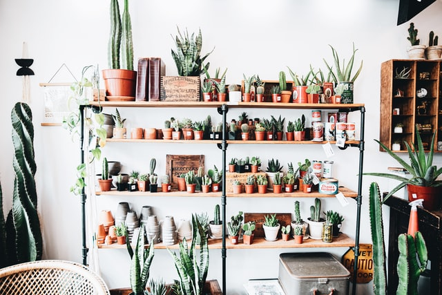

Om oss
Georgine Blom
Georgines glede og fascinasjon for planter ble sådd da hun som liten fulgte bestemoren sin rundt i hagen. Bestemor Viola har gjennom mange tiår vært lidenskapelig opptatt av å få små unnselige frø til å blomstre opp som de vakreste av blomster. Hennes hage har alltid vært et studie av praktfulle hagerom og planteglede. Det var blant hortensiaer og forglemmegei at Georgines pasjon for vekster vokste. Og fra bestemor Violas hage har veien frem til i dag bestått av en ivrig søken etter ny og bedre kunnskap som nå har resultert og kulminert i en liten butikk utenom det vanlige.
Om PlanteTante
Etter mange år der planteinteressen til Georgine har vokst seg stor og altomfattende, innså hun at det var et gap i markedet for butikker som rettet seg direkte mot den delen av befolkningen som er lidenskapelig opptatte av høy kvalitet i alle ledd og ønsker å skape et rom for planten og ikke omvendt. Butikken higer etter å til enhver tid være oppdatert på det siste innen hygrometer og luftfuktere, og ha det beste innen kompostjord og sand. Vi gleder oss veldig til at butikken i Munkegata 31 vil åpne i november!
Kontakt oss
Adresse: Munkegata 31
Tlf: +47 72PLANTE (72 75 26 83)
E-post: butikk@plantetante.no
Åpningstider
- Man: Stengt
- Tirs: 10-18
- Ons: 10-18
- Tors: 10-19
- Fre: 10-18
- Lør: 10-16
- Søn: Stengt